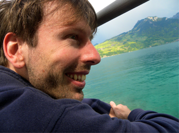

Lindstedtsvägen 3, floor 5, office 1520
SE-100 44 Stockholm, Sweden
Philipp
Haller
Associate professor of computer science at KTH Royal Institute of Technology in the Theoretical Computer Science Group, a Digital Futures Faculty and a WASP researcher. PhD EPFL, 2010.
My main research interests are in the design and implementation of programming languages, type systems, concurrency, and distributed programming.
In June 2019 I received, together with 8 other individuals, the 2019 ACM SIGPLAN Programming Languages Software Award for the development of the Scala language. (Press: EPFL, CMU, KTH CASTOR Center)
Previously, I was a researcher, software engineer, and consultant at Typesafe Inc. Prior to Typesafe, I was a post-doctoral fellow at Stanford in the Pervasive Parallelism Lab (PPL) and at EPFL in the Programming Methods Lab (LAMP). Prior to that I was a PhD student of Martin Odersky at EPFL.
I am a top-10 contributor of the Scala project. I am co-author (with Jason Zaugg, Lightbend) of Scala's async/await extension (SIP-22) for asynchronous programming, and one of the lead designers of Scala's futures library (SIP-14). I created Scala's first widely-used actor library, and am the main author of the book "Actors in Scala" (Artima, 2012).
Curriculum Vitae (Sep 2018)
PhD students
- Han Fu (PhD, second supervisor, main supervisor Cyrille Artho)
- Lars Hummelgren (PhD, second supervisor, main supervisor David Broman)
- Oscar Eriksson (PhD, second supervisor, main supervisor David Broman)
- Tianyi Zhou (PhD, second supervisor, main supervisor Aristides Gionis)
Alumni
- Dr. Jonas Spenger (main supervisor, co-supervisor Paris Carbone), PhD defended December 11, 2025 (PhD thesis)
- Dr. Jens Kanstrup Larsen (DTU Compute, co-supervisor, main supervisor Alceste Scalas, DTU, Denmark), PhD defended November 7, 2025
- Dr. Viktor Palmkvist (second supervisor, main supervisor David Broman), PhD defended October 8, 2024 (PhD thesis)
- Dr. Xin Zhao, PhD defended February 23, 2021 (PhD thesis, video of public defense)
News
(Note: updated sporadically at best)
-
June 2019 -- I received, together with 8 other individuals, the 2019 ACM SIGPLAN Programming Languages Software Award for the development of the Scala language. (Press: EPFL, CMU, KTH CASTOR Center) -
December 2018 -- I was promoted to Associate Professor. -
June 2018 -- I became Docent in Computer Science. -
June 2017 -- I received the 2016 Teacher of the Year award of the School of Computer Science and Communication (now EECS) at KTH Royal Institute of Technology, for Software Development Academy, the bootcamp education for newly arrived immigrants which I created together with Mattias Wiggberg (KTH) and Farzad Golchin (Novare Potential). -
November 2016 -- The CFP for PLACES 2017 was published. Please consider submitting a paper. PLACES 2017 is co-located with ETAPS 2017 in Uppsala, Sweden. -
November 2016 -- I am going to give a talk on Thursday December 1st at the 10th Annual Multicore Day 2016 which is part of the SICS Software Week 2016. Topic: Safe and Scalable Concurrent Programming in Scala. -
September 2016 -- Our paper Reactive Async: Expressive Deterministic Concurrency (with Simon Geries, Michael Eichberg, and Guido Salvaneschi) has been accepted to the Scala Symposium 2016. -
August 2016 -- My paper LaCasa: Lightweight Affinity and Object Capabilities in Scala with Alex Loiko has been accepted to OOPSLA 2016. -
June 2016 -- I will attend a Dagstuhl Seminar on Theory and Applications of Behavioural Types to be held at Schloss Dagstuhl in Germany. -
June 2016 -- I was interviewed by 47 Degrees at Scala Days Berlin 2016 on deterministic concurrency and the future of Scala (video on YouTube). -
June 2016 -- Our pilot project on an intensive programming education for new arrivals to Sweden has received funding from the Wallenberg Foundations (KTH news, ComputerSweden). -
May 2016 -- Our paper Function Passing: A Model for Typed, Distributed Functional Programming (with Heather Miller, Normen Müller, and Jocelyn Boullier) has been accepted to Onward! 2016. -
April 2016 -- I will attend a Dagstuhl Seminar on Programming Language Techniques for Incremental and Reactive Computing to be held at Schloss Dagstuhl in Germany.
Publications
Book
Actors in Scala, by Philipp Haller and Frank Sommers. Walnut Creek, California. Artima Inc, 2012.
Actors in Scala is the authoritative guide to programming with the actors framework of Scala's standard library, co-written by the creator and lead maintainer, Philipp Haller. The book provides a comprehensive introduction to the actor model of concurrency and shows how Scala's actors enable you to build efficient, scalable, and robust concurrent software for the JVM.

Journals and Conference Proceedings

.
.
28th Euromicro Conference on Digital System Design
(DSD 2025),
Salerno, Italy,
September 10-12, 2025.
[DOI]
.
.
38th European Conference on Object-Oriented Programming
(ECOOP 2024),
Vienna, Austria,
September 16-20, 2024.
[DOI]
[ECOOP]
Companion technical report: [arXiv:2407.06738]
In industrial embedded software, are some compilation errors easier to localize and fix than others?
.
Proceedings of the 17th IEEE International Conference on Software Testing, Verification, and Validation
(ICST 2024): 383-394,
Toronto, Canada,
May 27-31, 2024.
[DOI]
[ICST]
.
.
ACM SIGPLAN International Conference on Object-Oriented Programming, Systems, Languages, and Applications
(OOPSLA 2016),
Amsterdam, Netherlands,
November 2016.
[DOI]
[ACM DL]
[OOPSLA]
[GitHub]
Companion technical report: [arXiv:1607.05609]
.
.
ACM International Symposium on New Ideas, New Paradigms, and Reflections on Programming and Software
(Onward! 2016),
Amsterdam, Netherlands,
November 2016.
[DOI]
[ACM DL]
[Onward!]
Companion technical report: [EPFL-REPORT-221395]
.
.
European Conference on Object-Oriented Programming
(ECOOP 2012),
Beijing, China,
June 2012.
[DOI]
.
.
European Conference on Object-Oriented Programming
(ECOOP 2010),
Maribor, Slovenia,
June 2010.
[DOI]
.
.
9th International Conference on Coordination Models and Languages
(Coordination 2007),
Paphos, Cyprus,
June 2007.
[DOI]
Refereed Workshops and Demos
.
.
Polystore systems for heterogeneous data in multiple databases with privacy and security assurances
(Poly 2021),
Copenhagen, Denmark (Hybrid),
August 2021.
[SharedIt]
.
.
International Workshop on Programming Based on Actors, Agents, and Decentralized Control
(AGERE! 2015),
Pittsburgh, PA, USA,
October 2015.
[ACM DL]
.
.
Scala Workshop
(Scala 2014),
Uppsala, Sweden,
July 2014.
.
.
SPLASH Workshop on Reactivity, Events and Modularity
(REM 2013),
Indianapolis, IN, USA,
October 2013.
.
.
Languages and Compilers for Parallel Computing
(LCPC 2012),
Tokyo, Japan,
September 2012.
.
.
ACM SIGPLAN Workshop on Partial Evaluation and Program Manipulation
(PEPM 2012),
Philadelphia, PA, USA,
January 2012.
.
.
NIPS Workshop on Parallel and Large-Scale Machine Learning
(BigLearn 2011),
Sierra Nevada, Spain,
December 2011.
.
.
Scala Workshop,
Stanford, CA, USA,
June 2011.
.
.
SPLASH Workshop on Concurrency for the Application Programmer,
Reno, Nevada, USA,
October 2010.
.
.
Scala Workshop,
Lausanne, Switzerland,
April 2010.
Invited Papers
Editorship
.
.
(Scala 2017),
Vancouver, BC, Canada,
October 2017.
Theses
Talks
Video recordings of several of my talks available via this YouTube playlist, or via the links provided below.
- invitedFailure Transparency for Stream Processing and Actors,Technical University of Denmark,Copenhagen, Denmark,Nov 7, 2025.
- Simple and Safe Pickling of Closures in Scala 3,Scala Days 2025,Lausanne, Switzerland,August 20, 2025.
- invitedFailure Transparency in Dataflow Systems,Uppsala University,Uppsala, Sweden,June 5, 2025.
- invitedTowards Safer Lightweight Concurrency in Scala,Scala Autumn Meetup @ Wolt,Stockholm, Sweden,September 12, 2024.
- invitedExtending Scala for Safe Concurrent Programming,University of Waterloo,Waterloo, Canada,May 29, 2024.
- invitedExtending Scala for Safe Concurrent Programming,Université de Montréal,Montreal, Canada,May 24, 2024.
- invitedExtending Scala for Safe Concurrent Programming,McGill University,Montreal, Canada,May 23, 2024.
- invitedKeynote: Lightweight Affine Types for Safe Concurrency in Scala,Lund, Sweden,12 March 2024.
- invitedKeynote: How to Make Distributed Programming Safer using Types,Västerås, Sweden,22 November 2023.
- Portals: Teleporting smart edge services to a serverless future,Karolinska Institutet, Sweden,19 October 2023.
- Consistency Types for Replicated Data in a Higher-order Distributed Programming Language,Tokyo, Japan,15 March 2023.
- How to avoid safety hazards when using closures in Scala,St. Louis, Missouri, USA,23 September 2022.
- invitedExtending Dataflow Streaming for Stateful Serverless,Stockholm, Sweden,1 September 2022.
- invitedKeynote: Towards Robust Large-scale Concurrent and Distributed Programming,Cluj-Napoca, Romania (Virtual),30 July 2021.
- invitedSelected Challenges in Concurrent and Distributed Programming,Workshop on Programming Languages and Distributed Systems,RISE Computer Science, Stockholm, Sweden,5 March 2020.
- Consistency Types for Distributed Programming Languages,Atlanta, GA, USA,22 October 2019.
- invitedFine-grained Deterministic Parallelization of Static Analyses,Stockholm, Sweden,14 October 2019.
- invitedKeynote: Serverless Cloud Computing Beyond FaaS: Programming Models and Abstractions,Vienna, Austria,29 August 2019.
- invitedAsynchronous streams in direct style with and without macros,Curry On,London, UK,15 July 2019.
- Asynchronous streams in direct style with and without macros,Scala Days,Lausanne, Switzerland,13 June 2019.
- Robust, Large-scale Concurrent and Distributed Programming,Docent Lecture, KTH Royal Institute of Technology,Stockholm, Sweden,17 August 2018.
- invitedDeterministic Concurrency for Reliable, Large-Scale Software Systems,MPI-SWS,Kaiserslautern, Germany,February 2018.
- invitedOpening Session: Programming Reactive Systems in Scala: Principles and Abstractions,Entwicklertag Frankfurt 2018,Frankfurt, Germany,February 2018.
- Lineages as a first-class construct for fault-tolerant distributed programming,Chaos Engineering Day,Stockholm, Sweden,December 2017.
- invitedKeynote: Taming Concurrent Programming with Domain-Specific Languages,ACM SIGPLAN International Workshop on Software Engineering for Parallel Systems 2017,Vancouver, Canada,October 2017.
- Quantifying and Explaining Immutability in Scala,Scala Days 2017,Copenhagen, Denmark,June 2017.
- invitedSafe and Scalable Concurrent Programming in Scala,10th Annual Multicore Day, SICS Software Week,December 2016.
- LaCasa: Lightweight Affinity and Object Capabilities in Scala,ACM SIGPLAN OOPSLA,November 2016.
- Reactive Async: Expressive Deterministic Concurrency,ACM SIGPLAN Symposium on Scala,October 2016.
- invitedLaCasa: Lightweight Affinity and Object Capabilities in Scala,Northeastern University, USA,September 2016.
- invitedInvited Talk: Can we make concurrency in Scala safer?,Scala World 2016,Rheged Centre, Lake District, UK,September 2016.
- invitedInvited Talk: Papers vs. Artifacts,ECOOP 2016 Doctoral Symposium,Rome, Italy,July 2016.
- Programming with Futures, Lattices, and Quiescence,Scala Days 2016,Berlin, Germany,June 2016.
- invitedKeynote: Reactive Programming in Scala,parallel 2016,Heidelberg, Germany,April 2016.
- invitedInvited Keynote Talk: Papers vs. Artifacts,SPLASH 2015 Doctoral Symposium,Pittsburgh, Pennsylvania, USA,October 2015.
- invitedKeynote: High-Level Concurrency Libraries: Challenges for Tool Support,ETX 2015 Eclipse Technology eXchange,Pittsburgh, Pennsylvania, USA,October 2015.
- A formal model for direct-style asynchronous observables,27th Nordic Workshop on Programming Theory (NWPT 2015),Reykjavik University, Iceland,October 2015.
- Function-Passing Style, A New Model for Asynchronous and Distributed Programming,with Heather Miller,Scala Days 2015,Amsterdam, Netherlands,June 2015.
- Futures and Async: When to Use Which?,Scala Days 2014,Berlin, Germany,June 2014.
- invitedThe Next 700 Asynchronous Programming Models,SPLASH 2013 (SPLASH-I),Indianapolis, IN,October 2013.

- Simplifying Asynchronous Code With Scala Async,Strange Loop 2013,St. Louis, MO, USA,November 2013.
- Scala Async: A New Way to Simplify Asynchronous Code (Make the Compiler Do It!),Scala Days 2013,New York City, NY,June 2013.
- invitedSimplifying Asynchronous Code with Scala Async,Skills Matter,London, UK,June 2013.
- Simplifying Asynchronous Code with Scala Async,Emerging Technologies for the Enterprise (PhillyETE),Philadelphia, PA, USA,April 2013.
- Correctly and Efficiently Combining Concurrency Abstractions,Skills Matter,London, UK,December 2012.
- invitedFutures and Promises in Scala 2.10,The Scala eXchange,London, UK,November 2012.
- invitedKeynote: On the Integration of the Actor Model in Mainstream Technologies-- The Scala Perspective,AGERE! @ SPLASH 2012,Tucson, Arizona, USA,October 2012.
- Futures and Promises in Scala 2.10,with Heather Miller,Scala Enthusiasts Lausanne Meeting,Lausanne, Switzerland,September 2012.
- Futures and Promises in Scala 2.10,with Heather Miller,Boston Area Scala Enthusiasts,Boston, Massachusetts, USA,August 2012.
- The Many Flavors of Parallel Programming in Scala,Scalathon 2011,Philadelphia, Pennsylvania, USA,July 2011.
- Scala for Multicore Programming,UPMARC Multicore Computing Summer School,Stockholm, Sweden,June 2011.
- Parallelizing Machine Learning-- Functionally,with Heather Miller,Second Annual Scala Workshop,Stanford, California, USA,June 2011.
- Capabilities for Uniqueness and Borrowing,24th European Conference on Object-Oriented Programming (ECOOP 2010),Maribor, Slovenia,June 2010.
- Lightweight language support for type-based, concurrent event processing,First Annual Scala Workshop,Lausanne, Switzerland,April 2010.
- Scala: How to Make Best Use of Functions and Objects,with Lukas Rytz and Martin Odersky,Tutorial at ACM Symposium on Applied Computing,Sierre, Switzerland,March 2010.
- Actor-Based Concurrency in Scala,with Frank Sommers,JavaOne 2009,San Francisco, California, USA,June 2009.
- invitedAn Overview of Scala,Copenhagen Programming Language Seminar (COPLAS),Copenhagen, Denmark,June 2008.
- Implementing Joins using Extensible Pattern Matching,10th International Conference on Coordination Models and Languages (COORDINATION'08),Oslo, Norway,June 2008.
- invitedConcurrent Programming in Scala: Actors and Joins,2nd International Summer School on Trends in Concurrency (TiC'08),Prague, Czech Republic,June 2008.
- Implementing Joins using Extensible Pattern Matching,Workshop on Declarative Aspects of Multicore Programming (DAMP'08) @ POPL 2008,San Francisco, California, USA,January 2008.
- Actors that Unify Threads and Events,9th International Conference on Coordination Models and Languages (COORDINATION'07),Paphos, Cyprus,June 2007.
- Scala Actors-- Scalable Multithreading on the JVM,IBM Development Lab,Boeblingen, Germany,May 2007.
Copyright © 2006-2025 Philipp Haller. All rights reserved.

Service
- Onward! Papers 2025 (PC)
- Programming Journal (Associate Editor)
Past Service
- POPL 2025 (PC)
- PaPoC @ EuroSys 2024 (Co-chair)
- <Programming> 2024 (Co-chair SRC)
- OOPSLA 2023 (RC)
- CC 2023 (PC)
- ECOOP 2022 (PC and Chair VCOOP 2022)
- <Programming> 2022 (RC)
- OOPSLA 2021 (ERC)
- OOPSLA 2020 (ERC)
- ECOOP 2020
- FORTE 2020
- <Programming> 2020 (Co-Chair ACM SRC)
- APLAS 2019
- FSEN 2019
- ProWeb 2019
- <Programming> 2019 (PC, Co-Chair ACM SRC)
- SPLASH 2018 (Chair Doc. Symp.)
- Onward! 2018 Papers
- ECOOP 2018 (Co-Chair AEC)
- SEFM 2018
- ESOP 2018
- ProWeb 2018
- <Programming> 2018 (PC, Chair ACM SRC)
- Scala 2017 (Program Chair)
- GPCE 2017
- OCAP 2017
- ECOOP 2017 (Co-Chair AEC)
- IWACO 2017
- PLACES 2017 (Co-Chair)
- CC 2017
- FSEN 2017
- REBLS 2016
- Scala 2016
- AGERE! 2016 (Co-Chair)
- ECOOP 2016
- REBLS 2015
- AGERE! 2015 (Co-Chair)
- Scala 2015 (Co-Chair)
- ENASE 2015
- REBLS 2014
- AGERE! 2014 (Co-Chair)
- Scala 2014 (Co-Chair)
- PLPV 2014
- REM 2013
- AGERE! 2013
- Scala 2013 (Co-Chair)
- ECOOP 2013
- ACME 2013
- AGERE! 2012
- LaME 2012